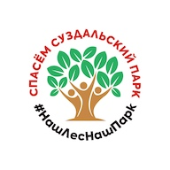

Инструкция к действию
Поддержать Суздальский парк легко.
Голосование
Примите участие в опросе
🌼️
Посети парк
Посети Суздальский парк:
- сделай красивое фото 📸
- напиши отзыв в карты Яндекс ↗️
- напиши отзыв в карты Гугл ↗️
- сделай пост️ с локацией «Суздальский парк» в Инстаграм ↗️
🌳
Новости
28 января 2022 — Губернатор Калининградской области подписал новую редакцию↗️ Правил землепользования и застройки г. Калининград (ПЗЗ)
18 января 2022 — Новый 2022 год начинается с неутешительных новостей ↗️
Мы собрали все события на отдельной странице. Приглашаем узнать нашу историю ⬇️